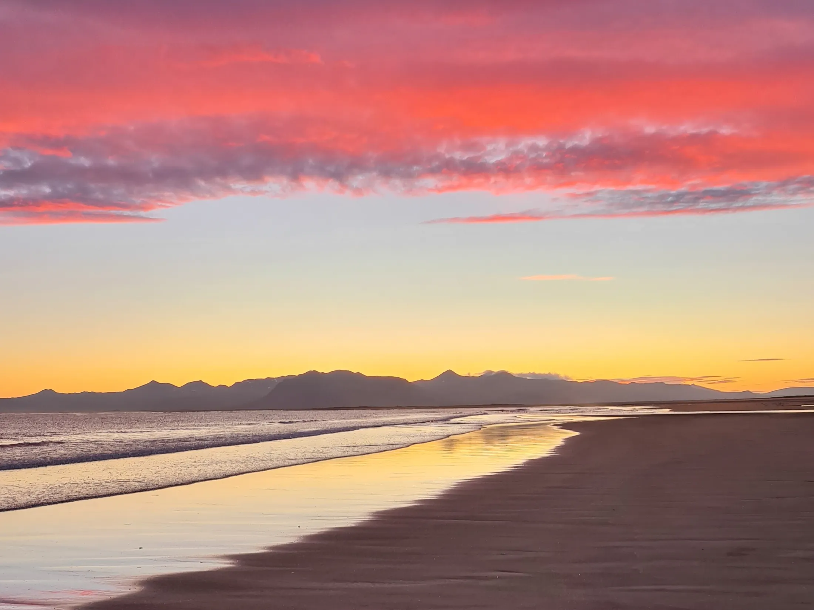
A farm by the ocean,
at the south end of Löngufjörur
Hítarneskot


The farm by the tide
Hítarneskot is originally a farm where sheep and horses did roam around the land. In 2015 the interior of the residential house was refurbished. We have been welcoming guests in Hítarneskot since 2015, and in 2025 two new houses were completed.
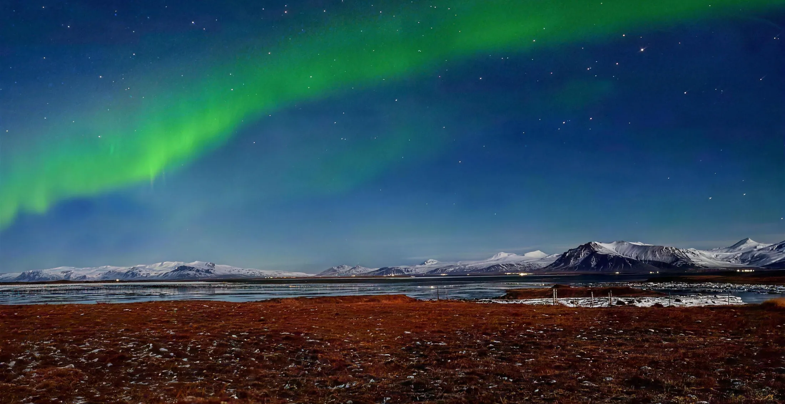
The seasons on the shore
The tide sets the day here. In winter the northern lights come over the coast. In summer the riders arrive with their horses, and the evening light stays on the flats.
- WinterNorthern lights over the coast, watched from the house
- AprilSunsets seen from the dining room
- SummerGroups ride out on the sand with their own horses
Days at Hítarneskot
Everything below is on the property or on the shore in front of it. Borgarnes is 41 km away and Stykkishólmur 73 km.
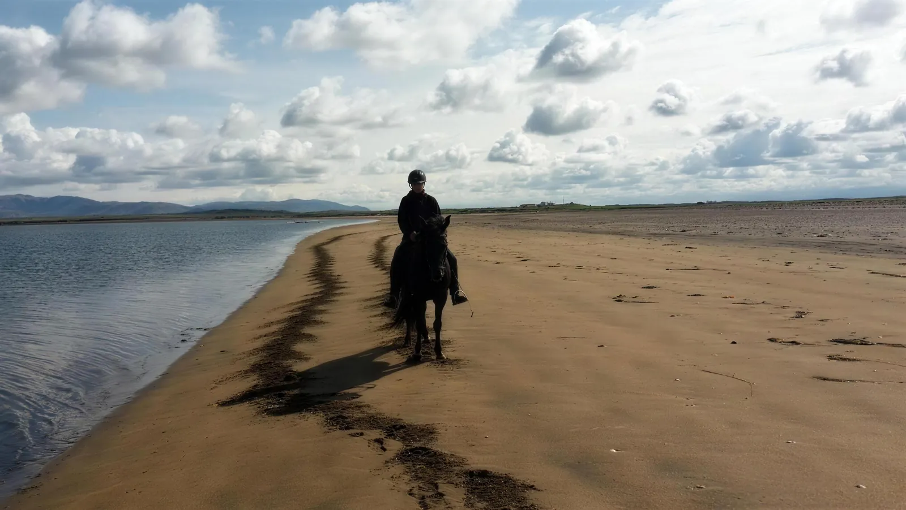
The beach ride
Riders bring their own horses and ride out from the house across sand banks, river flats, black sand and gold sand. The tide sets the time.
The ride
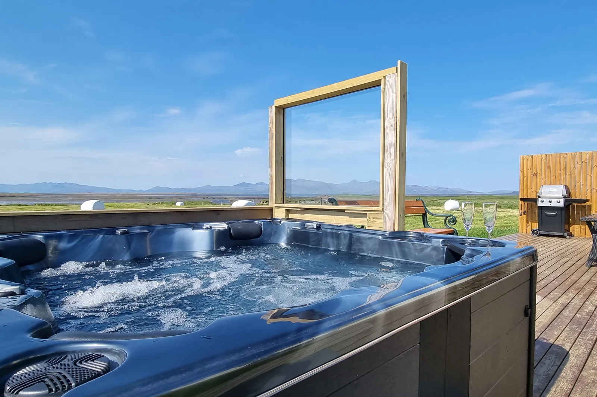
The hot tub
A private hot tub at every house. The Ocean House has its own on the deck, with the sea and the mountains in front of it.
Hot tub
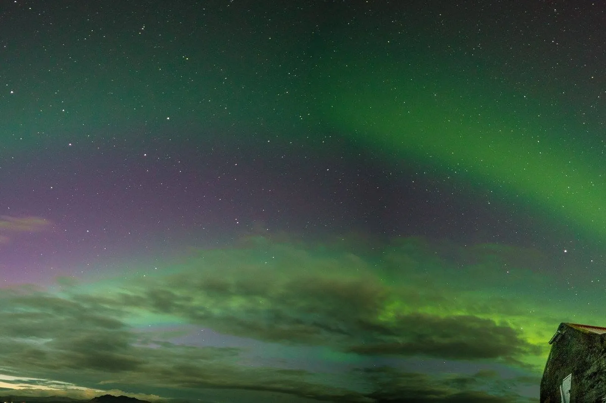
Northern lights
In winter, visitors can enjoy watching the northern lights.
Aurora
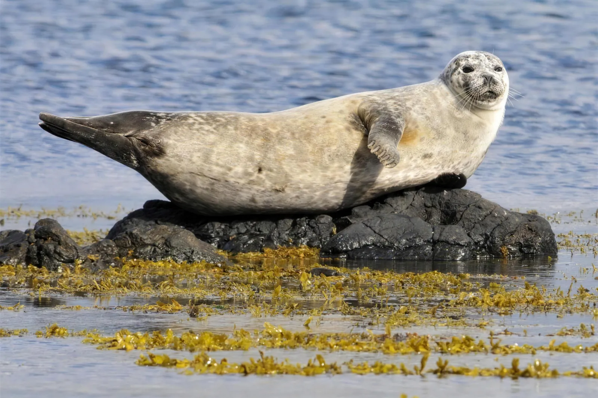
Wildlife by the ocean
Seals on the rocks and eagles over the shore, as the host's own listing photos show.
Wildlife
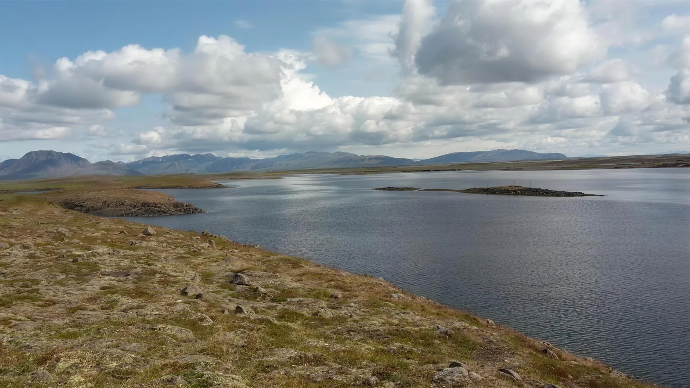
The river
The river Hítará and the flats around it, in the host's own photos of the surroundings.
River
“A magnificent view of the sea, mountains, craters, and Snæfellsjökull.”
Three houses, one shore
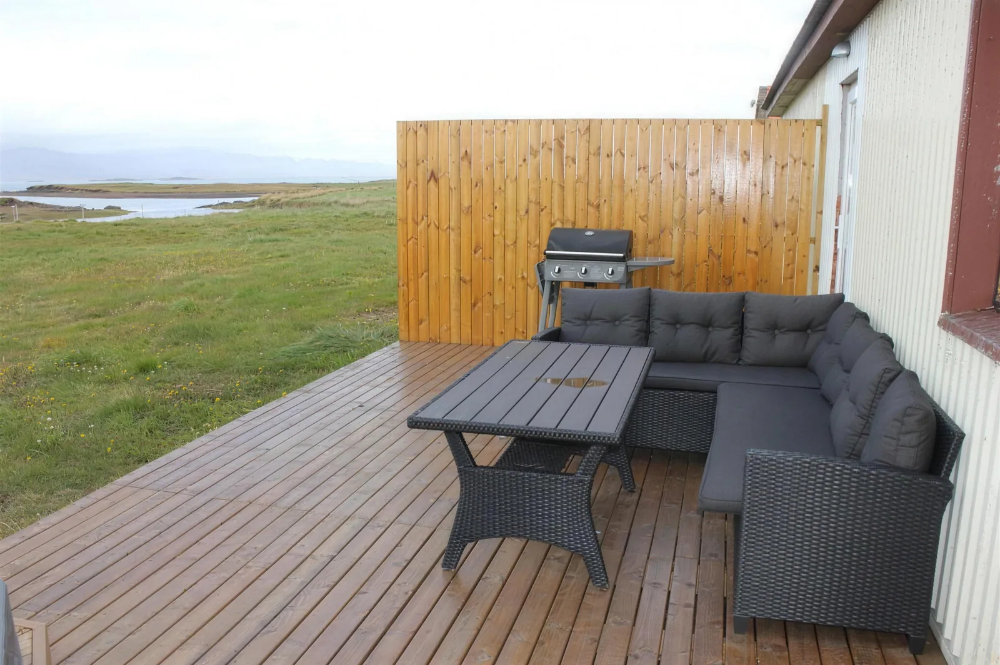
Ocean House
Sleeps nine in four bedrooms. A 1945 farmhouse refurbished in 2015, with a private hot tub on the deck, a full kitchen, a BBQ grill and direct beach access.
[ 4.77 · 471 reviews ]
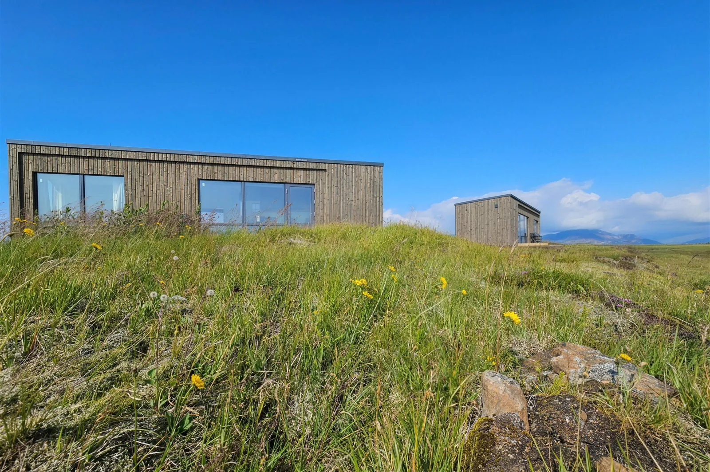
Lake House 1
Completed in 2025, for up to four: one bedroom with a queen bed, a sofa bed in the living room, a full kitchen and a private hot tub. Floor-to-ceiling windows face the meadow.
[ 4.81 · 32 reviews ]
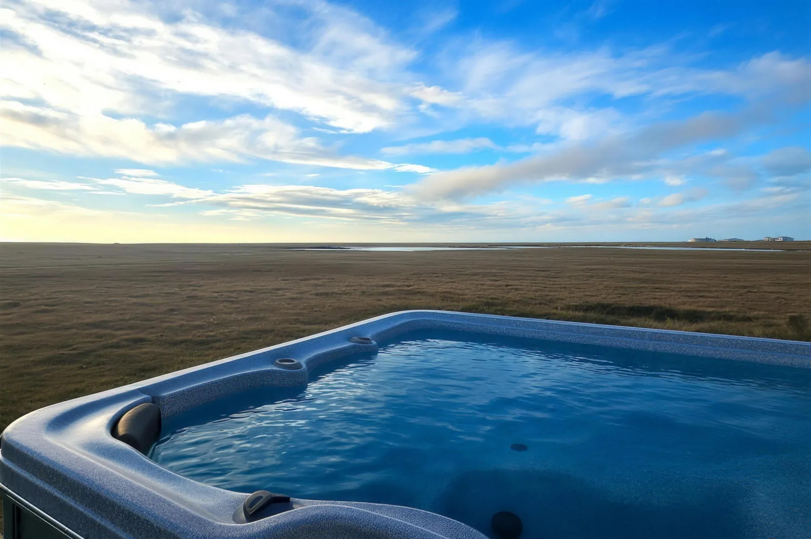
Lake House 2
The same plan as the first, for up to four, with its own private hot tub.
[ 4.8 · 10 reviews ]
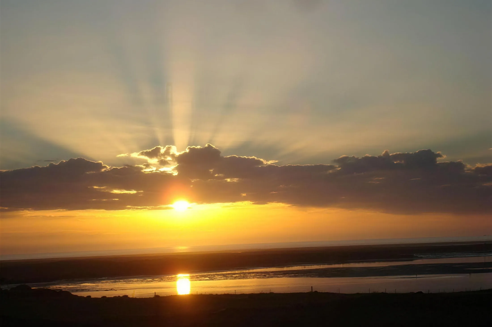
Guests rate Hítarneskot 9.1 out of 10 on Booking.com, from 282 reviews.
64° 09′ N 21° 57′ W
Reykjavík
North to the turn for Hítarnes
From Reykjavík the road runs north through Borgarnes and out onto Route 54 towards Stykkishólmur. The sign for Hítarnesvegur 566 marks the turn to the shore.
N64 42.749 W22 20.618
Hítarneskot
RVKHÍT
64° 09′ N 21° 57′ W
Reykjavík
Leave the city northbound on Route 1. It is 115 km by road to the farm, about two hours.
Borgarnes
41 km and 42 minutes from the farm, where the road turns west onto Route 54.
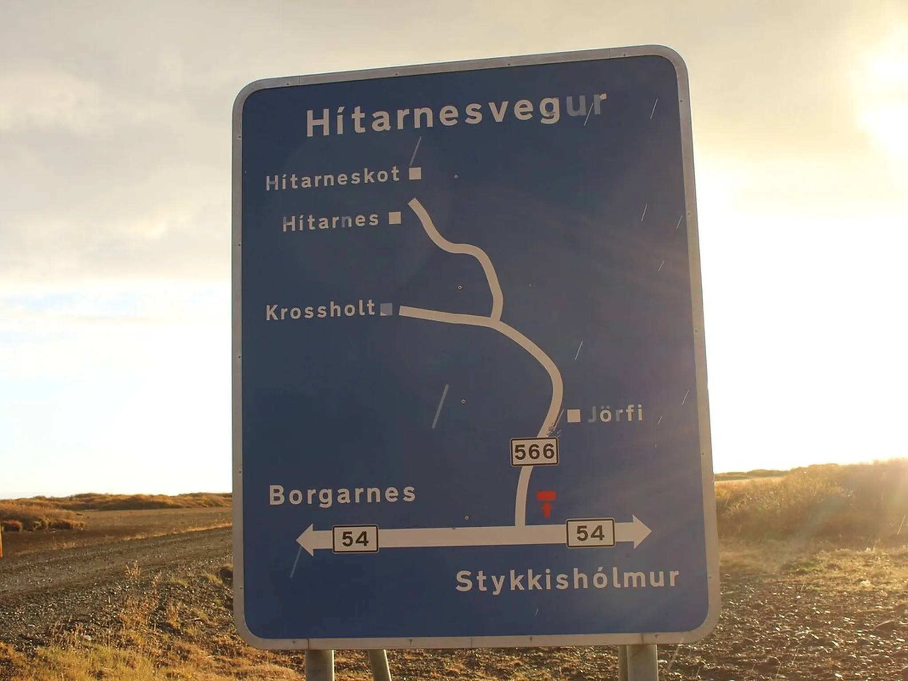
Hítarnesvegur 566
The sign at the turn. Follow it to Hítarnes and on to Hítarneskot.
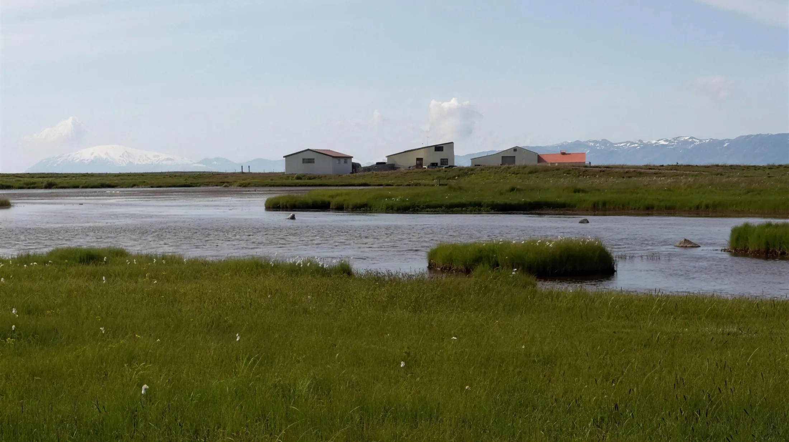
N64 42.749 W22 20.618
Hítarneskot
Let yourself in; the key waits in a lockbox. The hosts are five minutes away in Hítarnes.
- 42 minto Borgarnes, 41 km by road
- 67 minto Stykkishólmur, 73 km
- 83 minto Arnarstapi on Snæfellsnes, 94 km
The farm
1945, 2015 and 2025
Hítarneskot began as a farm where sheep and horses roamed the land. The farmhouse was built in 1945 and fully renovated in January 2015, and guests have stayed in it ever since. In 2025 two new one-bedroom houses were completed, the Lake Houses, on the same private 500 hectare property along the coast.
- Farmhouse built
- 1945
- Renovated
- January 2015
- Lake Houses
- Completed 2025
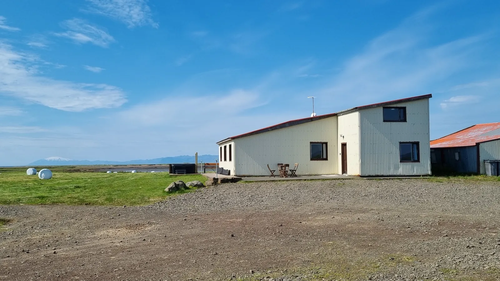
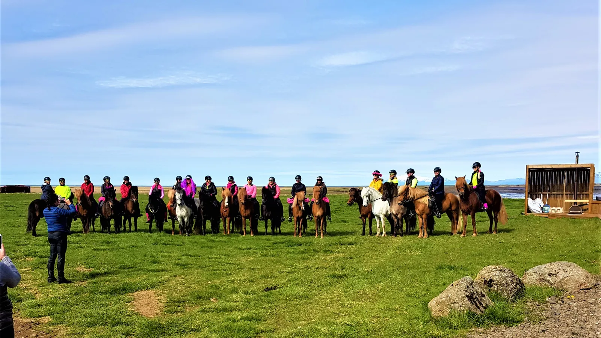
Löngufjörur
Bring your horses to the beach
Hítarneskot stands at the south end of Löngufjörur, the long sand shore riders travel to. Groups bring their own Icelandic horses and ride out with the hosts across grassy sand banks, river flats, black sand and gold sand. A fenced field with water waits beside the house, and the ride times follow the tide.
- Groups
- 10 in the house, 15 with tents
- Day rides
- Up to 40 riders, about 2.5 hours
- On every ride
- A helmet
Hópum býðst að koma með hross og fara í ferðir út á fjörur í fylgd með staðarhaldara.
Inside the houses
The Ocean House is a farmhouse with room for a group: four bedrooms and a long dining table. The two Lake Houses are new, with floor-to-ceiling windows onto the meadow.
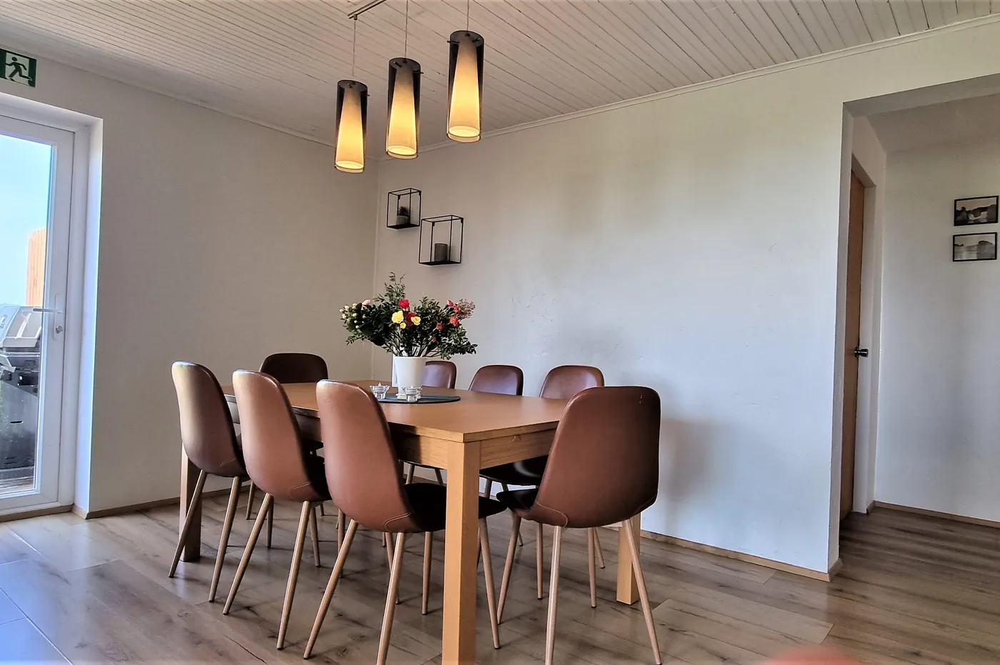
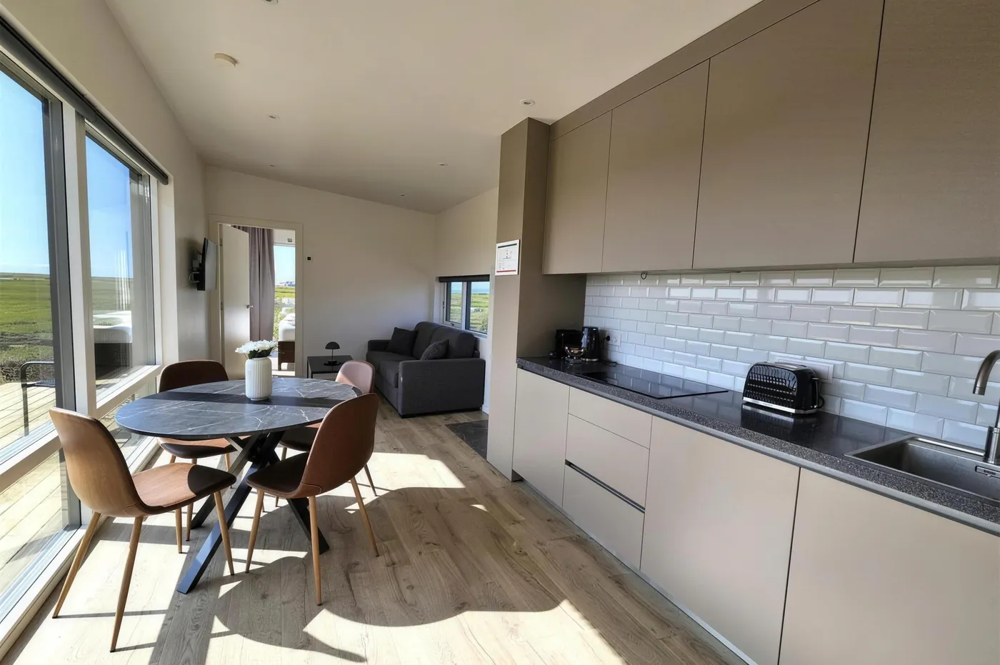
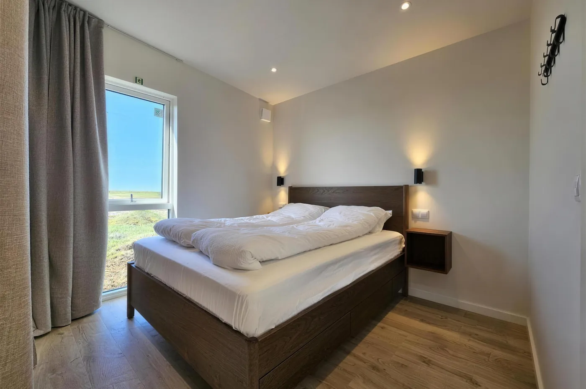
The nearest town is Borgarnes, 41 km away. The hosts live five minutes away in Hítarnes and help if you need them.
Ask for your dates
Pick a house and your dates, and the request goes straight to the hosts. No card and no charge; they confirm each stay in writing within one business day.
- 17 guestsacross the three houses, by their own listings
- Ridersgroups bring their own horses: 10 in the Ocean House, 15 with tents
- No carda request, not a charge; the hosts confirm
Request sent
Thank you. The request is with the hosts and they confirm each stay in writing. Nothing is charged now.
Reference